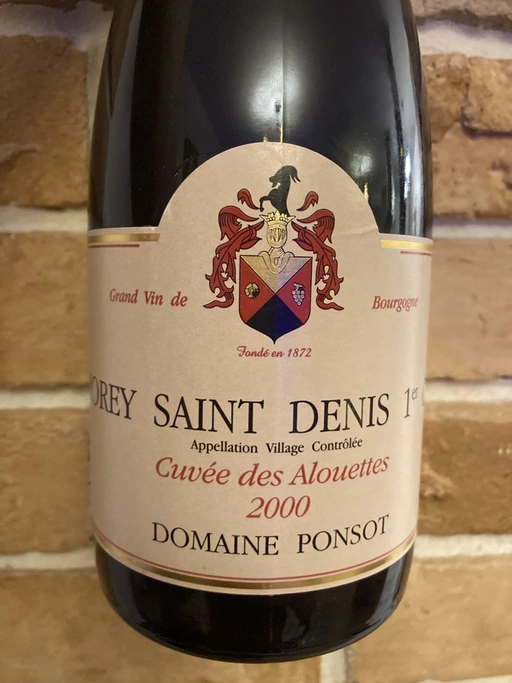

- Type
- Red Still, Dry
- Producer
- Domain Ponsot
- Vintage
- 2000
- Location
- France, Morey-Saint-Denis AOC
- Grapes
- Pinot Noir
- Alcohol
- 13.7
- Sugar
- 1
- Price
- 7000 UAH
- Cellar
- N/A
Ratings
2021-12-31 - 9.25
21 years old Pinot Noir and it’s not over peak yet. Clear pale brick colour with thick oily rim. Intense and complex bouquet showing age: pickles, slightly rotten wild strawberry, wet forest floor, sweat, dust, pomegranate, violets, cherry and hints of tobacco. Juicy and delicious, medium body, fresh with soft and medium tannin. Long evolving aftertaste with flavours of strawberry, forest floor and white pepper. Almost perfectly balanced. Great!